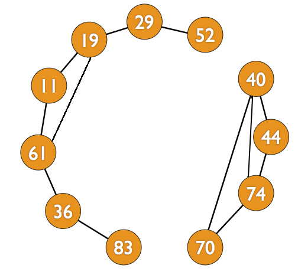

Castor est facteur. Il organise ses tournées de distribution du courrier de façon étrange :
Ainsi, par exemple, s'il commence à la maison 23, la maison suivante peut être 28, 31 ou 72 mais pas 19.
Avec un tel principe, il lui arrive de devoir faire plusieurs tournées pour distribuer tout le courrier.
Aujourd'hui, Castor doit distribuer du courrier aux maisons qui ont les numéros suivants :
11, 19, 29, 36, 40, 44, 52, 61, 70, 74, 83
Quel est le nombre maximum de maisons auxquelles il peut distribuer du courrier en une seule tournée ?
La réponse est 7
Castor peut distribuer tout son courrier en deux tournées :
Tournée 1 : 83 - 36 - 61 - 11 - 19 - 29 - 52
Tournée 2 : 40 - 44 - 74 - 70
Lors de la tournée 1, il distribue du courrier à 7 maisons.
On peut représenter la solution avec un « graphe ». Pour cela nous créons un cercle dans lequel nous inscrivons chaque numéro et nous relions deux cercles si leurs numéros respectifs ont un chiffre en commun.

Les graphes sont des outils de représentation très utilisés en informatique. Les cercles sont appelés « nœuds » ou « sommets » et les liens entre eux « arcs » ou « arêtes » Un « chemin » est la suite d'arcs qui permet d'aller d'un nœud à un autre.
Dans cet exemple, le sujet ne parle pas de graphes, mais les règles de la tournée du facteur définissent un graphe implicite, que nous avons représenté sur l'illustration. Analyser un problème pour y découvrir un ou plusieurs graphes implicites qui s'y cachent, puis analyser les propriétés de ces graphes permet souvent de résoudre des problèmes au prime abord difficiles, en appliquant des algorithmes classiques de graphes. Dans le sujet présenté, le simple fait de représenter le graphe fait que la réponse saute aux yeux.
Les graphes sont utilisés pour la résolution de différents types de problèmes : l'ordonnancement de tâches, la représentation de dépendances, la recherche de plus court chemin, etc.